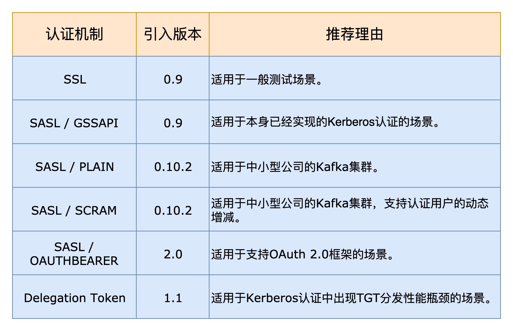
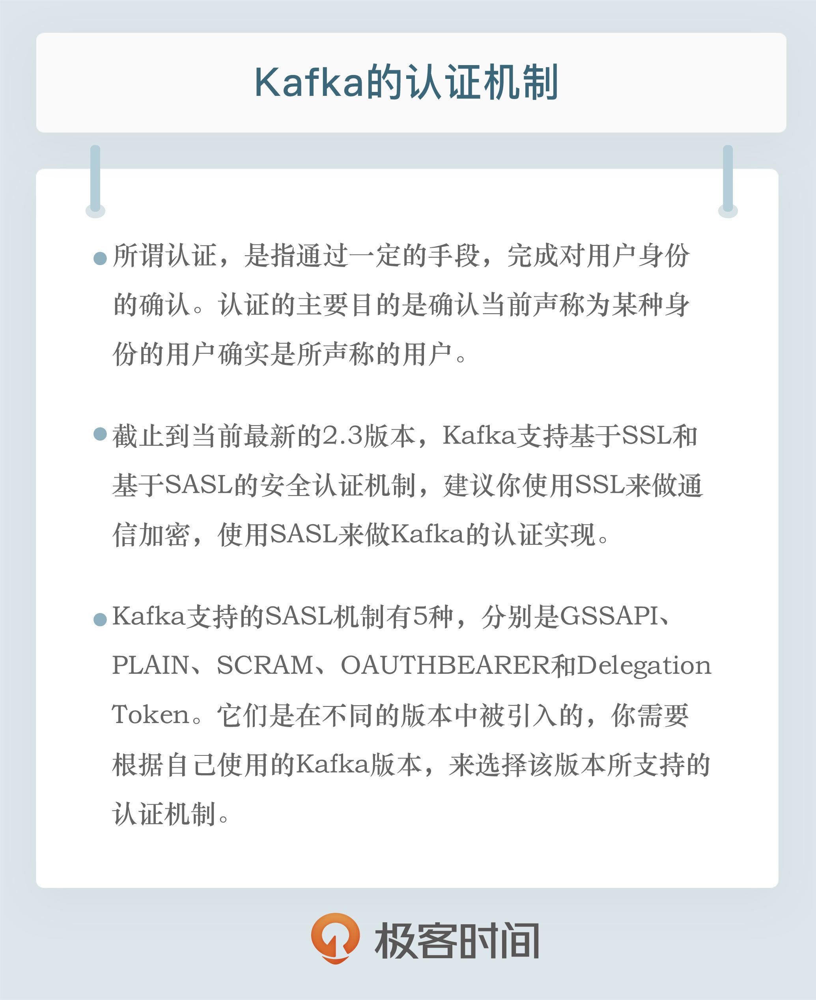

- 00 开篇词 为什么要学习Kafka？.md.html
- 01 消息引擎系统ABC.md.html
- 02 一篇文章带你快速搞定Kafka术语.md.html
- 03 Kafka只是消息引擎系统吗？.md.html
- 04 我应该选择哪种Kafka？.md.html
- 05 聊聊Kafka的版本号.md.html
- 06 Kafka线上集群部署方案怎么做？.md.html
- 07 最最最重要的集群参数配置（上）.md.html
- 08 最最最重要的集群参数配置（下）.md.html
- 09 生产者消息分区机制原理剖析.md.html
- 10 生产者压缩算法面面观.md.html
- 11 无消息丢失配置怎么实现？.md.html
- 12 客户端都有哪些不常见但是很高级的功能？.md.html
- 13 Java生产者是如何管理TCP连接的？.md.html
- 14 幂等生产者和事务生产者是一回事吗？.md.html
- 15 消费者组到底是什么？.md.html
- 16 揭开神秘的“位移主题”面纱.md.html
- 17 消费者组重平衡能避免吗？.md.html
- 18 Kafka中位移提交那些事儿.md.html
- 19 CommitFailedException异常怎么处理？.md.html
- 20 多线程开发消费者实例.md.html
- 21 Java 消费者是如何管理TCP连接的_.md.html
- 22 消费者组消费进度监控都怎么实现？.md.html
- 23 Kafka副本机制详解.md.html
- 24 请求是怎么被处理的？.md.html
- 25 消费者组重平衡全流程解析.md.html
- 26 你一定不能错过的Kafka控制器.md.html
- 27 关于高水位和Leader Epoch的讨论.md.html
- 28 主题管理知多少_.md.html
- 29 Kafka动态配置了解下？.md.html
- 30 怎么重设消费者组位移？.md.html
- 31 常见工具脚本大汇总.md.html
- 32 KafkaAdminClient：Kafka的运维利器.md.html
- 33 Kafka认证机制用哪家？.md.html
- 34 云环境下的授权该怎么做？.md.html
- 35 跨集群备份解决方案MirrorMaker.md.html
- 36 你应该怎么监控Kafka？.md.html
- 37 主流的Kafka监控框架.md.html
- 38 调优Kafka，你做到了吗？.md.html
- 39 从0搭建基于Kafka的企业级实时日志流处理平台.md.html
- 40 Kafka Streams与其他流处理平台的差异在哪里？.md.html
- 41 Kafka Streams DSL开发实例.md.html
- 42 Kafka Streams在金融领域的应用.md.html
- 加餐 搭建开发环境、阅读源码方法、经典学习资料大揭秘.md.html
- 用户故事 黄云：行百里者半九十.md.html
- 结束语 以梦为马，莫负韶华！.md.html
- 捐赠
33 Kafka认证机制用哪家？
你好，我是胡夕。今天我要和你分享的主题是：Kafka的认证机制。
什么是认证机制？
所谓认证，又称“验证”“鉴权”，英文是authentication，是指通过一定的手段，完成对用户身份的确认。认证的主要目的是确认当前声称为某种身份的用户确实是所声称的用户。
在计算机领域，经常和认证搞混的一个术语就是授权，英文是authorization。授权一般是指对信息安全或计算机安全相关的资源定义与授予相应的访问权限。
举个简单的例子来区分下两者：认证要解决的是你要证明你是谁的问题，授权要解决的则是你能做什么的问题。
在Kafka中，认证和授权是两套独立的安全配置。我们今天主要讨论Kafka的认证机制，在专栏的下一讲内容中，我们将讨论授权机制。
Kafka认证机制
自0.9.0.0版本开始，Kafka正式引入了认证机制，用于实现基础的安全用户认证，这是将Kafka上云或进行多租户管理的必要步骤。截止到当前最新的2.3版本，Kafka支持基于SSL和基于SASL的安全认证机制。
基于SSL的认证主要是指Broker和客户端的双路认证（2-way authentication）。通常来说，SSL加密（Encryption）已经启用了单向认证，即客户端认证Broker的证书（Certificate）。如果要做SSL认证，那么我们要启用双路认证，也就是说Broker也要认证客户端的证书。
对了，你可能会说，SSL不是已经过时了吗？现在都叫TLS（Transport Layer Security）了吧？但是，Kafka的源码中依然是使用SSL而不是TLS来表示这类东西的。不过，今天出现的所有SSL字眼，你都可以认为它们是和TLS等价的。
Kafka还支持通过SASL做客户端认证。SASL是提供认证和数据安全服务的框架。Kafka支持的SASL机制有5种，它们分别是在不同版本中被引入的，你需要根据你自己使用的Kafka版本，来选择该版本所支持的认证机制。
- GSSAPI：也就是Kerberos使用的安全接口，是在0.9版本中被引入的。
- PLAIN：是使用简单的用户名/密码认证的机制，在0.10版本中被引入。
- SCRAM：主要用于解决PLAIN机制安全问题的新机制，是在0.10.2版本中被引入的。
- OAUTHBEARER：是基于OAuth 2认证框架的新机制，在2.0版本中被引进。
- Delegation Token：补充现有SASL机制的轻量级认证机制，是在1.1.0版本被引入的。
认证机制的比较
Kafka为我们提供了这么多种认证机制，在实际使用过程中，我们应该如何选择合适的认证框架呢？下面我们就来比较一下。
目前来看，使用SSL做信道加密的情况更多一些，但使用SSL实现认证不如使用SASL。毕竟，SASL能够支持你选择不同的实现机制，如GSSAPI、SCRAM、PLAIN等。因此，我的建议是你可以使用SSL来做通信加密，使用SASL来做Kafka的认证实现。
SASL下又细分了很多种认证机制，我们应该如何选择呢？
SASL/GSSAPI主要是给Kerberos使用的。如果你的公司已经做了Kerberos认证（比如使用Active Directory），那么使用GSSAPI是最方便的了。因为你不需要额外地搭建Kerberos，只要让你们的Kerberos管理员给每个Broker和要访问Kafka集群的操作系统用户申请principal就好了。总之，GSSAPI适用于本身已经做了Kerberos认证的场景，这样的话，SASL/GSSAPI可以实现无缝集成。
而SASL/PLAIN，就像前面说到的，它是一个简单的用户名/密码认证机制，通常与SSL加密搭配使用。注意，这里的PLAIN和PLAINTEXT是两回事。PLAIN在这里是一种认证机制，而PLAINTEXT说的是未使用SSL时的明文传输。对于一些小公司而言，搭建公司级的Kerberos可能并没有什么必要，他们的用户系统也不复杂，特别是访问Kafka集群的用户可能不是很多。对于SASL/PLAIN而言，这就是一个非常合适的应用场景。总体来说，SASL/PLAIN的配置和运维成本相对较小，适合于小型公司中的Kafka集群。
但是，SASL/PLAIN有这样一个弊端：它不能动态地增减认证用户，你必须重启Kafka集群才能令变更生效。为什么呢？这是因为所有认证用户信息全部保存在静态文件中，所以只能重启Broker，才能重新加载变更后的静态文件。
我们知道，重启集群在很多场景下都是令人不爽的，即使是轮替式升级（Rolling Upgrade）。SASL/SCRAM就解决了这样的问题。它通过将认证用户信息保存在ZooKeeper的方式，避免了动态修改需要重启Broker的弊端。在实际使用过程中，你可以使用Kafka提供的命令动态地创建和删除用户，无需重启整个集群。因此，如果你打算使用SASL/PLAIN，不妨改用SASL/SCRAM试试。不过要注意的是，后者是0.10.2版本引入的。你至少要升级到这个版本后才能使用。
SASL/OAUTHBEARER是2.0版本引入的新认证机制，主要是为了实现与OAuth 2框架的集成。OAuth是一个开发标准，允许用户授权第三方应用访问该用户在某网站上的资源，而无需将用户名和密码提供给第三方应用。Kafka不提倡单纯使用OAUTHBEARER，因为它生成的不安全的JSON Web Token，必须配以SSL加密才能用在生产环境中。当然，鉴于它是2.0版本才推出来的，而且目前没有太多的实际使用案例，我们可以先观望一段时间，再酌情将其应用于生产环境中。
Delegation Token是在1.1版本引入的，它是一种轻量级的认证机制，主要目的是补充现有的SASL或SSL认证。如果要使用Delegation Token，你需要先配置好SASL认证，然后再利用Kafka提供的API去获取对应的Delegation Token。这样，Broker和客户端在做认证的时候，可以直接使用这个token，不用每次都去KDC获取对应的ticket（Kerberos认证）或传输Keystore文件（SSL认证）。
为了方便你更好地理解和记忆，我把这些认证机制汇总在下面的表格里了。你可以对照着表格，进行一下区分。

SASL/SCRAM-SHA-256配置实例
接下来，我给出SASL/SCRAM的一个配置实例，来说明一下如何在Kafka集群中开启认证。其他认证机制的设置方法也是类似的，比如它们都涉及认证用户的创建、Broker端以及Client端特定参数的配置等。
我的测试环境是本地Mac上的两个Broker组成的Kafka集群，连接端口分别是9092和9093。
第1步：创建用户
配置SASL/SCRAM的第一步，是创建能否连接Kafka集群的用户。在本次测试中，我会创建3个用户，分别是admin用户、writer用户和reader用户。admin用户用于实现Broker间通信，writer用户用于生产消息，reader用户用于消费消息。
我们使用下面这3条命令，分别来创建它们。
$ cd kafka_2.12-2.3.0/
$ bin/kafka-configs.sh --zookeeper localhost:2181 --alter --add-config 'SCRAM-SHA-256=[password=admin],SCRAM-SHA-512=[password=admin]' --entity-type users --entity-name admin
Completed Updating config for entity: user-principal 'admin'.
$ bin/kafka-configs.sh --zookeeper localhost:2181 --alter --add-config 'SCRAM-SHA-256=[password=writer],SCRAM-SHA-512=[password=writer]' --entity-type users --entity-name writer
Completed Updating config for entity: user-principal 'writer'.
$ bin/kafka-configs.sh --zookeeper localhost:2181 --alter --add-config 'SCRAM-SHA-256=[password=reader],SCRAM-SHA-512=[password=reader]' --entity-type users --entity-name reader
Completed Updating config for entity: user-principal 'reader'.
在专栏前面，我们提到过，kafka-configs脚本是用来设置主题级别参数的。其实，它的功能还有很多。比如在这个例子中，我们使用它来创建SASL/SCRAM认证中的用户信息。我们可以使用下列命令来查看刚才创建的用户数据。
$ bin/kafka-configs.sh --zookeeper localhost:2181 --describe --entity-type users --entity-name writer
Configs for user-principal 'writer' are SCRAM-SHA-512=salt=MWt6OGplZHF6YnF5bmEyam9jamRwdWlqZWQ=,stored_key=hR7+vgeCEz61OmnMezsqKQkJwMCAoTTxw2jftYiXCHxDfaaQU7+9/dYBq8bFuTio832mTHk89B4Yh9frj/ampw==,server_key=C0k6J+9/InYRohogXb3HOlG7s84EXAs/iw0jGOnnQAt4jxQODRzeGxNm+18HZFyPn7qF9JmAqgtcU7hgA74zfA==,iterations=4096,SCRAM-SHA-256=salt=MWV0cDFtbXY5Nm5icWloajdnbjljZ3JqeGs=,stored_key=sKjmeZe4sXTAnUTL1CQC7DkMtC+mqKtRY0heEHvRyPk=,server_key=kW7CC3PBj+JRGtCOtIbAMefL8aiL8ZrUgF5tfomsWVA=,iterations=4096
这段命令包含了writer用户加密算法SCRAM-SHA-256以及SCRAM-SHA-512对应的盐值(Salt)、ServerKey和StoreKey。这些都是SCRAM机制的术语，我们不需要了解它们的含义，因为它们并不影响我们接下来的配置。
第2步：创建JAAS文件
配置了用户之后，我们需要为每个Broker创建一个对应的JAAS文件。因为本例中的两个Broker实例是在一台机器上，所以我只创建了一份JAAS文件。但是你要切记，在实际场景中，你需要为每台单独的物理Broker机器都创建一份JAAS文件。
JAAS的文件内容如下：
KafkaServer {
org.apache.kafka.common.security.scram.ScramLoginModule required
username="admin"
password="admin";
};
关于这个文件内容，你需要注意以下两点：
- 不要忘记最后一行和倒数第二行结尾处的分号；
- JAAS文件中不需要任何空格键。
这里，我们使用admin用户实现Broker之间的通信。接下来，我们来配置Broker的server.properties文件，下面这些内容，是需要单独配置的：
sasl.enabled.mechanisms=SCRAM-SHA-256
sasl.mechanism.inter.broker.protocol=SCRAM-SHA-256
security.inter.broker.protocol=SASL_PLAINTEXT
listeners=SASL_PLAINTEXT://localhost:9092
第1项内容表明开启SCRAM认证机制，并启用SHA-256算法；第2项的意思是为Broker间通信也开启SCRAM认证，同样使用SHA-256算法；第3项表示Broker间通信不配置SSL，本例中我们不演示SSL的配置；最后1项是设置listeners使用SASL_PLAINTEXT，依然是不使用SSL。
另一台Broker的配置基本和它类似，只是要使用不同的端口，在这个例子中，端口是9093。
第3步：启动Broker
现在我们分别启动这两个Broker。在启动时，你需要指定JAAS文件的位置，如下所示：
$KAFKA_OPTS=-Djava.security.auth.login.config=<your_path>/kafka-broker.jaas bin/kafka-server-start.sh config/server1.properties
......
[2019-07-02 13:30:34,822] INFO Kafka commitId: fc1aaa116b661c8a (org.apache.kafka.common.utils.AppInfoParser)
[2019-07-02 13:30:34,822] INFO Kafka startTimeMs: 1562045434820 (org.apache.kafka.common.utils.AppInfoParser)
[2019-07-02 13:30:34,823] INFO [KafkaServer id=0] started (kafka.server.KafkaServer)
$KAFKA_OPTS=-Djava.security.auth.login.config=<your_path>/kafka-broker.jaas bin/kafka-server-start.sh config/server2.properties
......
[2019-07-02 13:32:31,976] INFO Kafka commitId: fc1aaa116b661c8a (org.apache.kafka.common.utils.AppInfoParser)
[2019-07-02 13:32:31,976] INFO Kafka startTimeMs: 1562045551973 (org.apache.kafka.common.utils.AppInfoParser)
[2019-07-02 13:32:31,978] INFO [KafkaServer id=1] started (kafka.server.KafkaServer)
此时，两台Broker都已经成功启动了。
第4步：发送消息
在创建好测试主题之后，我们使用kafka-console-producer脚本来尝试发送消息。由于启用了认证，客户端需要做一些相应的配置。我们创建一个名为producer.conf的配置文件，内容如下：
security.protocol=SASL_PLAINTEXT
sasl.mechanism=SCRAM-SHA-256
sasl.jaas.config=org.apache.kafka.common.security.scram.ScramLoginModule required username="writer" password="writer";
之后运行Console Producer程序：
$ bin/kafka-console-producer.sh --broker-list localhost:9092,localhost:9093 --topic test --producer.config <your_path>/producer.conf
>hello, world
>
可以看到，Console Producer程序发送消息成功。
第5步：消费消息
接下来，我们使用Console Consumer程序来消费一下刚刚生产的消息。同样地，我们需要为kafka-console-consumer脚本创建一个名为consumer.conf的脚本，内容如下：
security.protocol=SASL_PLAINTEXT
sasl.mechanism=SCRAM-SHA-256
sasl.jaas.config=org.apache.kafka.common.security.scram.ScramLoginModule required username="reader" password="reader";
之后运行Console Consumer程序：
$ bin/kafka-console-consumer.sh --bootstrap-server localhost:9092,localhost:9093 --topic test --from-beginning --consumer.config <your_path>/consumer.conf
hello, world
很显然，我们是可以正常消费的。
第6步：动态增减用户
最后，我们来演示SASL/SCRAM动态增减用户的场景。假设我删除了writer用户，同时又添加了一个新用户：new_writer，那么，我们需要执行的命令如下：
$ bin/kafka-configs.sh --zookeeper localhost:2181 --alter --delete-config 'SCRAM-SHA-256' --entity-type users --entity-name writer
Completed Updating config for entity: user-principal 'writer'.
$ bin/kafka-configs.sh --zookeeper localhost:2181 --alter --delete-config 'SCRAM-SHA-512' --entity-type users --entity-name writer
Completed Updating config for entity: user-principal 'writer'.
$ bin/kafka-configs.sh --zookeeper localhost:2181 --alter --add-config 'SCRAM-SHA-256=[iterations=8192,password=new_writer]' --entity-type users --entity-name new_writer
Completed Updating config for entity: user-principal 'new_writer'.
现在，我们依然使用刚才的producer.conf来验证，以确认Console Producer程序不能发送消息。
$ bin/kafka-console-producer.sh --broker-list localhost:9092,localhost:9093 --topic test --producer.config /Users/huxi/testenv/producer.conf
>[2019-07-02 13:54:29,695] ERROR [Producer clientId=console-producer] Connection to node -1 (localhost/127.0.0.1:9092) failed authentication due to: Authentication failed during authentication due to invalid credentials with SASL mechanism SCRAM-SHA-256 (org.apache.kafka.clients.NetworkClient)
......
很显然，此时Console Producer已经不能发送消息了。因为它使用的producer.conf文件指定的是已经被删除的writer用户。如果我们修改producer.conf的内容，改为指定新创建的new_writer用户，结果如下：
$ bin/kafka-console-producer.sh --broker-list localhost:9092,localhost:9093 --topic test --producer.config <your_path>/producer.conf
>Good!
现在，Console Producer可以正常发送消息了。
这个过程完整地展示了SASL/SCRAM是如何在不重启Broker的情况下增减用户的。
至此，SASL/SCRAM配置就完成了。在专栏下一讲中，我会详细介绍一下如何赋予writer和reader用户不同的权限。
小结
好了，我们来小结一下。今天，我们讨论了Kafka目前提供的几种认证机制，我给出了它们各自的优劣势以及推荐使用建议。其实，在真实的使用场景中，认证和授权往往是结合在一起使用的。在专栏下一讲中，我会详细向你介绍Kafka的授权机制，即ACL机制，敬请期待。

开放讨论
请谈一谈你的Kafka集群上的用户认证机制，并分享一个你遇到过的“坑”。
欢迎写下你的思考和答案，我们一起讨论。如果你觉得有所收获，也欢迎把文章分享给你的朋友。
© 2019 - 2023 Liangliang Lee. Powered by gin and hexo-theme-book.